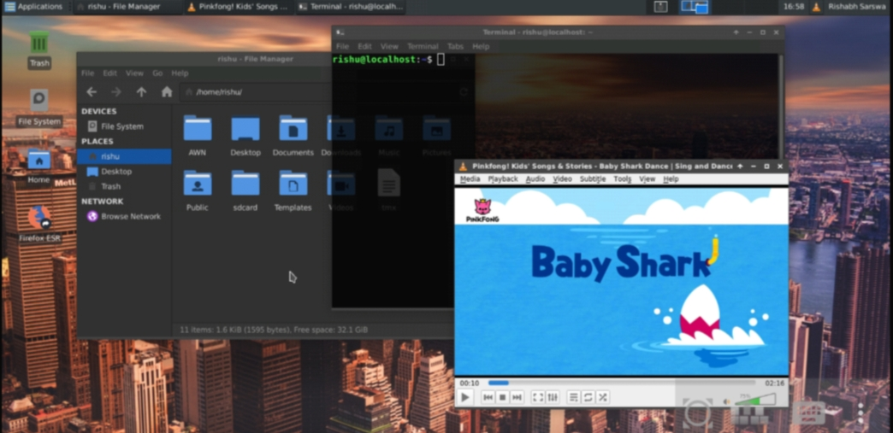
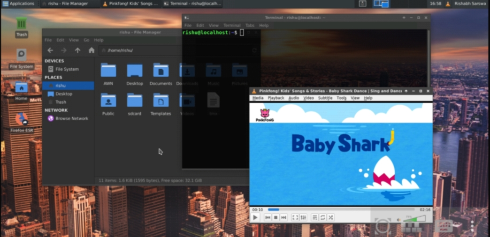

Rinix OS - Installation Guide
---------
Rinix OS is a Desktop GNU/Linux on android kernel(custom linux kernel)
based on debian using proot
supports graphical , command line , audio , microphone
using termux , termux-api apps
for audio,mic we use pulseaudio modules
for video output you can use vnc client
we are currenty working on native video output without using tcp,sockets
and android cam as webcam

 
android app in photo for vnc is
bvnc
Video Guide : YouTube Link
linux x11 themes in photo is
papirus-icon-theme
breeze-cursor-theme
adwaita dark xfce4 style
xfce4
xfce4-terminal with custom settings

android app in photo for vnc is
bvnc
Video Guide : YouTube Link
linux x11 themes in photo is
papirus-icon-theme
breeze-cursor-theme
adwaita dark xfce4 style
xfce4
xfce4-terminal with custom settings
Features :-
audio,microphone support on proot linux distro
automatic boot with termux app(optional)
full x11 support with openGL
works without rooted phone
no need of rooted phone
RNX Linux uses fake root
Issue :-
for any issue visit Here
Version :-
Docs : 2.2
up-rnx : 2.5
Rinix : 2.2
latest build : 2r210213b002 : 2.2 revision 2 : date = 13/02/2021
Tags :-
RNX Linux
Linux in 2 min
( 250MB with GUI )
for android
with audio support
Just 4 easy steps😊😊
audio for proot Linux distro in termux
run GNU/Linux on android
automatic run linux with termux
Desktop on Android
Android as Desktop
On Search :-
keyword "awnto rinix os" on google
Author :- Rishabh Sarswa (Rishu)
 Instagram(Rishu) : Here
--------- Table of contents -------------
Installation for arm64 == aarch64
Installation for armv7l == armhf
Guide for Rinix Update
Guide for Setting Theme
soon comming for 'x86' , 'x86_64'
Solution for some errors in Applications
Safe and open source
Source Code : Here
-----------------------------------------
--------- Steps for installation : arm64 == aarch64 -------------
Note : currently this method is only for
'aarch64' == 'arm64' devices
type 'uname -m' to check your device architecture
if architecture not 'aarch64' you can use old Rinix version Here
Instagram(Rishu) : Here
--------- Table of contents -------------
Installation for arm64 == aarch64
Installation for armv7l == armhf
Guide for Rinix Update
Guide for Setting Theme
soon comming for 'x86' , 'x86_64'
Solution for some errors in Applications
Safe and open source
Source Code : Here
-----------------------------------------
--------- Steps for installation : arm64 == aarch64 -------------
Note : currently this method is only for
'aarch64' == 'arm64' devices
type 'uname -m' to check your device architecture
if architecture not 'aarch64' you can use old Rinix version Here
Step 1 :
download "termux" and "termux api"
from play store
open termux and run commands in gey color text given below
Give Storage Permission to termux
Give microphone permission to termux-api (optional)
lock termux in android recent apps (so termux app keep alive)
Step 2 :
Step 2 : Download im-rootfs-aarch64.tar.xz
Download rootfs file
and create folder AWN in phone storage
place rootfs file in AWN folder
Download (213MB) with GUI(xfce4)(Debian 10)
||Phone_Storage >> AWN >> im-rootfs-aarch64.tar.xz
Step 3 :
install rinix binaries and configure RNX Linux
pkg install -y wget
wget -O up-rnx https://rinix.awnto.com/rnx-get/files/up-rnx
chmod 755 up-rnx
./up-rnx
rm up-rnx
rnx guide
echo "all done"
Step 4 :
vnc app bvnc
connect to vnc over port 5978 (GUI)
ip ==>
local = 127.0.0.1
wifi = 192.168.x.x
type 'ip addr' to known your ip
extra detail
sshd port is 7022
ftp server port is 7021
Step 5 :
Step 5 : Enjoy
to install softwares like terminal , firefox , vlc
only root user can install/update softwares
command 'su' is use to switch to root
su
then
apt update
then
apt full-upgrade
then
apt install xfce4-terminal
for firefox
apt install firefox-esr
for vlc
apt install vlc
for other softwares
just search like
example : "how to install vlc on debian"
remember our OS is arm64 == aarch64 not x86 == i386 , x86_64 == amd64
Message us if facing any problem : Contact details at bottom of this page
rnx < option >
<option>s are given below
______ __________________
/ \ / \
|option|---| discription |
\______/ \__________________/
help
| print help message : commands
|______________________________
|
check
| check or set configuration
|___________________________
|
cnf
| check or set configuration
|___________________________
|
next
| check or set configuration
|___________________________
|
fcnf
| force configure or reconfigure
|_______________________________
|
chuser
| change default user
|____________________
|
chrfl
| change root file location
|__________________________
|
run
| open Rinix shell as user
|__________________________
|
su
| open Rinix shell as root
|__________________________
|
boot
| run startup programs
|_____________________
|
auto
| automatic select b/w
| 'boot' or 'run'
|_____________________
|
info
| print user and rfl info
| and also print services status
|_______________________________
|
version
| print version
|______________
|
***
| print help
|___________
|
update
| download and update Rinix files
| need internet connection
|________________________________
in RNX
android_storage /awnto/sdcard
android_storage /home/rishu/sdcard
shared_folder (AWN) /home/rishu/AWN
other_shared /awnto/shared/*
here rishu stands for your username eg /home/user/AWN
---------------- solutions for some softwares errors -------------------
Solution for libreoffice error in Rinix OS
first install libreoffice
libreoffice error solution
mkdir -p /prod
wget -O /prod/version https://rinix.awnto.com/rnx-get/files/pla/proc_version
mv /usr/lib/libreoffice/program/oosplash /usr/lib/libreoffice/program/oosplash.ori
wget -O /usr/lib/libreoffice/program/oosplash https://rinix.awnto.com/rnx-get/files/pla/libre_oosplash
chmod 755 /usr/lib/libreoffice/program/oosplash
all done now open libereoffice
Solution for chromium
use "chromium --no-sandbox" instead of "chromium"
or you can use firefox
----------------------------------
Youtube : Here
Twitter : Here
Instagram(Rishu) : Here
Facebook : Here
WhatsApp(Rishu) : Here
Mail : i.awnto@gmail.com
Telegram : Channnel
Telegram : Group
Telegram : Help Desk
----------------------------------
---------------- Guide for Rinix Update -------------------
Upgrading from
for Rinix 2.2+ :
xnr upgrade
then restart your phone
update is all done
for Rinix lower than 2.2 :
first switch to termux Shell
exit
then
rnx update
then restart your phone
update is all done
-------------------------------------------------------------
---------------- Guide for setting theme -------------------
Video : how to set beautiful theme in Linux
first switch to root user
su
then
apt update
then
apt full-upgrade
then
apt install -y xfce4-terminal breeze-cursor-theme numix-gtk-theme
then
apt install papirus-icon-theme
papirus icon theme may take some time in decomressing
then
exit
Now at top left corner click on "Applications" >> "Settings" >> "Settings Manager"
then
in settings "Appearance"
"Style" >> "Adwaita-dark"
"Icons" >> "Papirus"
in settings "Window Manager" >> "Style" >> "Theme" >> "Numix"
in settings "Mouse and Touchpad" >> "Theme" >> "Breeze"
in settngs "Xfce4 Terminal" >> "Appearance" >> "Background" >> select transparent background >> "Opacity" >> set it to 0.80
then
Right click on Desktop >> "Desktop Settings" >> "Folder :" >> other >> select your folder
to auto hide panel 2
Right click on on taskbar >> "Panel" >> "Panel Preferences" >> select panel 2 >> "Automatic hide the panel" >> "Always"
Now theme is applied at most of places but not at all places
restart your phone to apply thtme at all places
------------------------------------------------------------
--------- Steps for installation : armv7l == armhf -------------
Note : this method is only for
'armv7l' == 'armhf' devices
type 'uname -m' to check your device architecture
if architecture not 'armv7l' you can use old Rinix version Here
Step 1 :
download "termux" and "termux api"
from play store
open termux and run commands in gey color text given below
Give Storage Permission to termux
Give microphone permission to termux-api (optional)
lock termux in android recent apps (so termux app keep alive until you close it)
apt update
apt install -y pulseaudio sox nano tar termux-api wget
then
pkg install wget openssl-tool proot -y && hash -r
then
wget -O up-rnx https://rinix.awnto.com/rnx-get/files/up-rnx-cross
chmod 755 up-rnx
./up-rnx
rm up-rnx
Step 2 :
Step 2 : Download rootfs.tar.xz
select debian buster armhf Here (30MB)
Download rootfs file
and create folder AWN in phone storage
place rootfs file in AWN folder
||Phone_Storage >> AWN >> rootfs.tar.xz
then
cd
mkdir -p rnx-fs/im-fs
cd rnx-fs/im-fs
proot --link2symlink tar -xvJf /sdcard/AWN/rootfs.tar.xz
then
rnx su
then install pulseaudio , tigervnc , sshd , proftpd , --- so on
apt update
apt install -y nano wget xfce4 pulseaudio openssh-server proftpd tigervnc-standalone-server tigervnc-xorg-extension tigervnc-viewer tigervnc-common dbus-x11 xfce4-terminal
then
exit
force configure
rnx fcnf
to set rnx profile
rnx next
to check Linux installed correctly
rnx next
Step 3 :
Open Linux shell
rnx run
set vncserver confs
tigervncserver :1
tigervncserver --kill :1
then restart your phone
Step 4 :
continue steps from step 4 aarch64 same for armhf
same as step 4 in installeation of aarch64
--------------------------------
----------------------------------
Youtube : Here
Twitter : Here
Instagram(Rishu) : Here
Facebook : Here
WhatsApp(Rishu) : Here
Mail : i.awnto@gmail.com
Telegram : Channnel
Telegram : Group
Telegram : Help Desk
----------------------------------